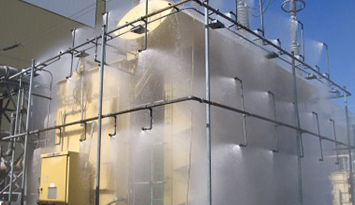
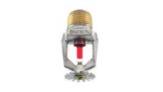
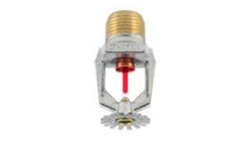
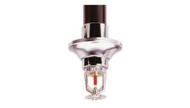
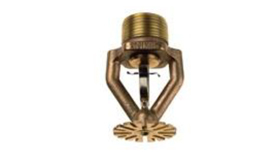

FIRE PROTECTION SYSTEM

Fire Protection Systems
We offer our clients and consultants solutions complying with the National Building Regulations. Design fire protection solutions are essential when designing new buildings or renovations to prevent dangerous and costly disasters. We at WIDELOGIX uses science, skills and engineering tools to design state of the art fire protection solutions to protect valuable assets from fire. We consider all possible scenarios and then determine which fire protection systems will provide the best safety objectives. Our main aim is to alleviate damage and distress caused by fires. We offer fire protection systems that are holistic, safety orientated and well-structured. Buildings designed according to proper fire protection standards have a proven track record of performing well in fires.
FIRE PROTECTION ADVICE AND ASSSISTANCE

We at WIDELOGIX offers our clients fire protection advice and assistance with technical queries, budgeting and preparation of tender documents and specifications. We are adept at analysing and developing solutions related to structures, materials, fire hazards, standards, legislation and project requirements. Our aim is to provide you with expert advice to satisfy your fire protection requirements. We are known for our specialist technical advice and speedy response times. To provide you with reliable fire protection advice and assistance , we stay abreast of developments in building and fire standards in our industry.
INSTALLATION OF FIRE PROTECTION

Our installation teams carry out the installation of fire protection components under the supervision of project managers and safety officers to ensure quality and timeous results. We have a reliable approach to installations of all types of fire sprinklers, pumps, tanks, detectors, hose reels, hydrants, extinguishers and specialised fire protection components. Our skilled field teams are qualified to install all fire protection components. All installations are monitored and tested to adhere to building regulations and safety and insurance requirements.



